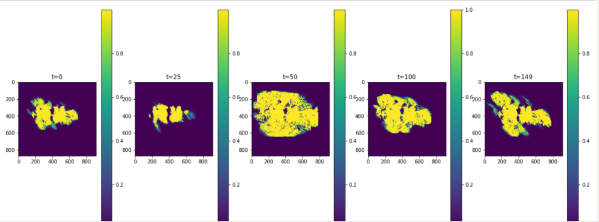
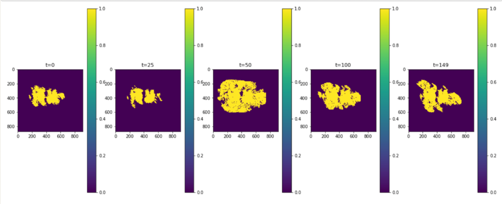
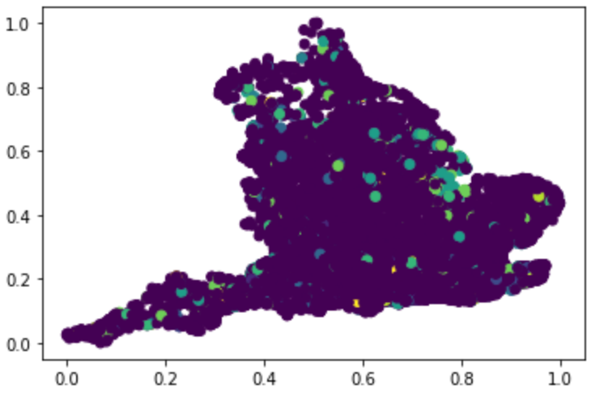
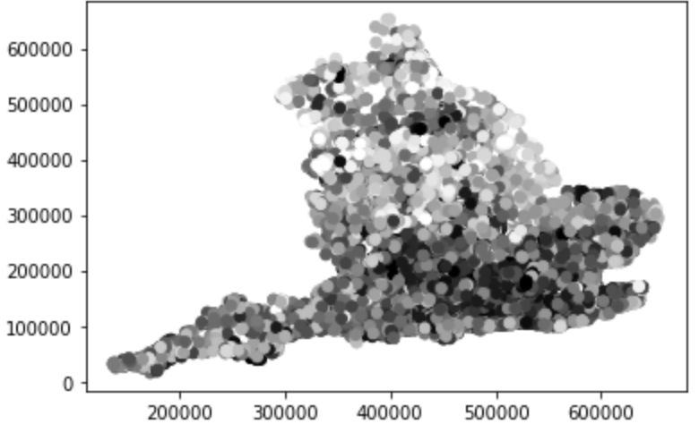

Major Master’s Projects in Computational and Applied Data Science#
A series of sprint-esque, multi-week projects in which 4-7 inter-academic course graduate co-developers develop machine learning applications of environmental datasets, culminating in the ‘product release’ and presentation to hypothetical clients and interest groups.
Hurricane Forecasting with Computer Vision#
Motivation: Given a set of satellite images of a hurricane, predict the hurricane’s evolution.
Proposed Solution: A convolution LSTM and GAN-LSTM were separately trained and tested, both constructed in PyTorch. The former achieved better results in both image prediction (according to a customly developed evaluation metric specific to image pixel similarity) and computational cost. Some results are shown below

Project Roles: Lead developer of image preprocessing workflow, co-developer of convolutional LSTM workflow (architecture optimzation), documentation and code sustainability maintainer, lead presenter.
Wildfire Forecasting and Correction#
Motivation: Using time series of satellite imagery coupled with ground sensor data, develop a neural network to predict the evolution of the wildfire in simulated ‘real-time’.
Proposed Solution: Principal Components Analysis (PCA) addressed issues of compressing and coupling the data, while an ensemble convolutional autoencoder-random forest regressor predicted wildfire image evolution in physical space. A Kalman filter was developed for the latent space of the autoencoder, correcting predictions in real-time. The images below show a comparison of the wildfire sensor ground truths and model predictions.
 
Project Roles: Lead PCA developer, co-developer of data assimilation workflow (filter tuning), Python project suite testing, lead presenter
Flood evolution and cost-of-damage prediction#
Motivation: Given historical flood data, local rainwater data, and property value estimates, classify the flood probability and predict cost of damages for every postcode in England.
Proposed Solution: Given the limited amount of data, leverage scientific principles to create new data features from the existing set. The cleaned, manipulated, and integrated dataset is sent to a multi-class model for flood probability. Each of the ten classes outputted by the model is the last input needed for a K-Nearest Neighbors regressor that predicts the corresponding damage cost. Screenshots of results from the classification model are shown in color, with damage cost in greyscale.
Ground Truths

Final Predictions

Project Roles: Lead developer of KNN regressor, lead data preprocessing developer, dataset feature creation, documentation and code sustainability maintainer, lead presenter